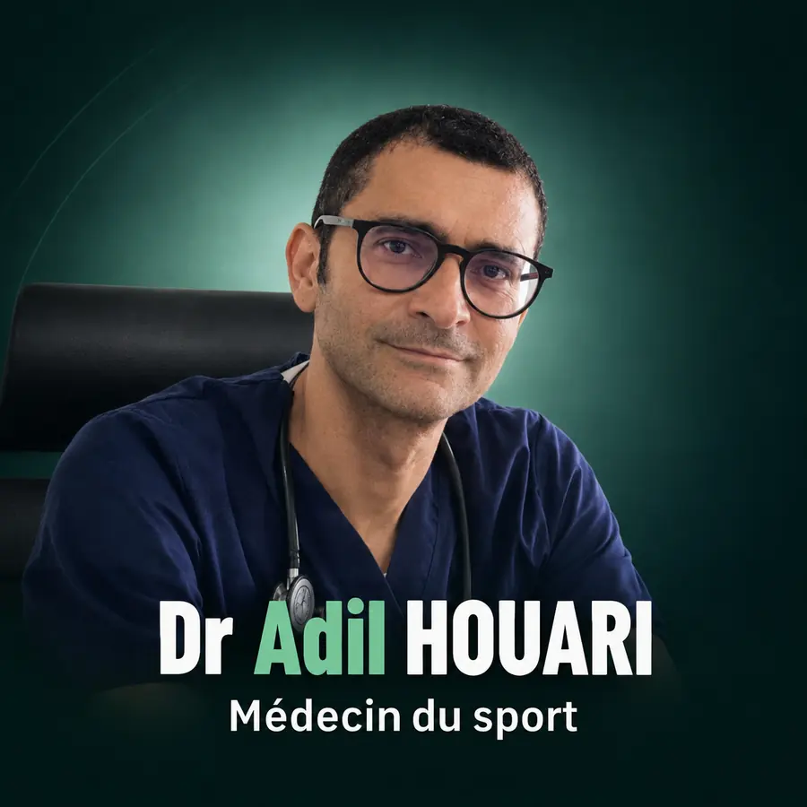

PrévenirDiagnostiquerTraiterAccompagner
Dr Adil Houari docteur en médecine et médecin du sport à Bouskoura. Une médecine moderne, humaine et fondée sur les preuves.
- Diar al Andalouss, BouskouraCabinet médical, Casablanca
- Lun–Ven 09:30–18:00Samedi 09:00–13:00
- Français · Anglais · ArabeVisites à domicile selon disponibilité
Consultations
Le Dr Houari est inscrit au Conseil de l’Ordre des médecins et reçoit toute la famille, du nourrisson à la personne âgée.
- Médecine du sportBilan médical, certificat d’aptitude, blessures, reprise après arrêt.
- Maladies allergiquesÉvaluation, suivi et prick-tests réalisés au cabinet.
- Médecine généraleSuivi de toute la famille, vaccination, ECG, certificat pour le permis de conduire.
- Douleurs articulairesÉchographie musculo-squelettique et infiltrations au cabinet.
- DiabèteDépistage et suivi, glycémie et HbA1c, conseils d’hygiène de vie.
- Hypertension artériellePrise en charge et suivi selon les recommandations internationales.
- ThyroïdeBilan et suivi des troubles thyroïdiens.
- ECGÉlectrocardiogramme au cabinet.
- Échographie générale et musculo-squelettiqueExplorations échographiques au cabinet.
- Infiltrations échoguidéesInfiltrations réalisées sous guidage échographique.
Médecin du sport,
et sportif lui-même
FootballTriathlonNatationCourseVélo
4×
Ironman 70.3 terminés. Le Dr Houari connaît de l’intérieur les contraintes de l’entraînement et de la compétition en natation, vélo et course à pied.
- Bilan médical et certificat d’aptitude sportive
- Tendinopathies, douleurs d’épaule, de genou, de hanche et de dos
- Prévention des blessures et gestion de la charge
- Reprise du sport après blessure
- Échographie et infiltrations au cabinet
Parcours
- Spécialiste en médecine du sport
- Qualifié par le Conseil national de l’Ordre des médecins, Commission Technique de Qualification, décembre 2025.
- Diplôme FIFA
- Médecine du football.
- Diabète
- Programme « Diabetes is Primary », American Diabetes Association, attestation du 23 novembre 2025.
- Échographie musculo-squelettique
- Muscles, tendons et articulations, directement au cabinet.
Questions fréquentes
- Où consulter un médecin du sport à Bouskoura ?
- Le Dr Adil Houari reçoit au cabinet situé Diar al Andalouss, Jasmine Offices 4, appartement n°10, 2e étage, Bouskoura 27182.
- Quels examens sont proposés au cabinet ?
- Le cabinet propose notamment l’ECG, l’échographie générale et musculo-squelettique ainsi que les infiltrations échoguidées.
- Pour quels sports consulter ?
- Le Dr Houari accompagne les sportifs de toutes les disciplines, quel que soit leur niveau de pratique, pour la prévention des blessures, le suivi médical et la reprise du sport après une blessure.
- Comment prendre rendez-vous ?
- Vous pouvez appeler le +212 7 17 17 30 88 ou contacter le cabinet par WhatsApp. Les horaires sont indiqués dans la section contact.
Prendre rendez-vous
Cabinet médical Dr Adil Houari
Diar al Andalouss, Jasmine Offices 4,
Appart N°10, Étage 2
Bouskoura 27182, Casablanca
Diar al Andalouss, Jasmine Offices 4,
Appart N°10, Étage 2
Bouskoura 27182, Casablanca
| Lundi au vendredi | 09:30–18:00 |
| Samedi | 09:00–13:00 |
| Dimanche | Fermé |
Visites à domicile possibles selon disponibilité à Bouskoura, Ville Verte, Casa Diaa, Vitoria et quartiers limitrophes. Les horaires peuvent changer : appelez pour les confirmer. Information générale uniquement. En cas d’urgence vitale, contactez les services d’urgence.